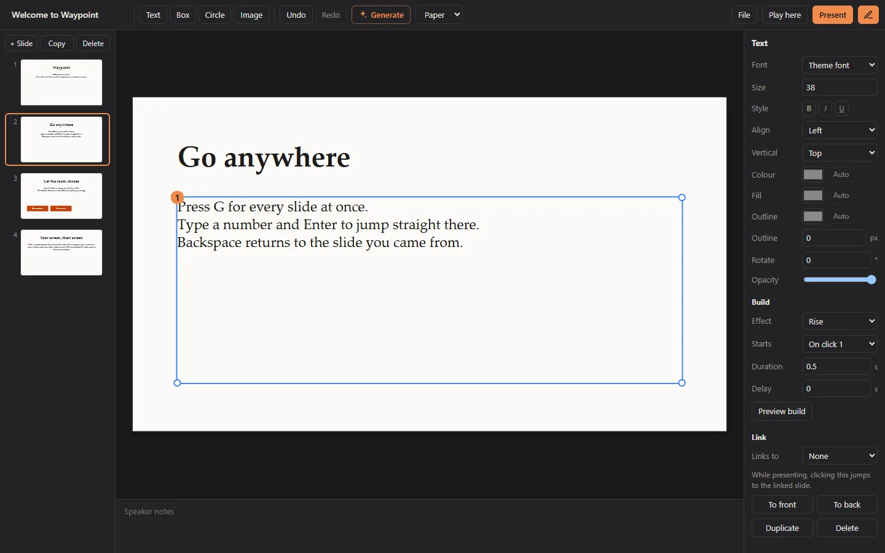
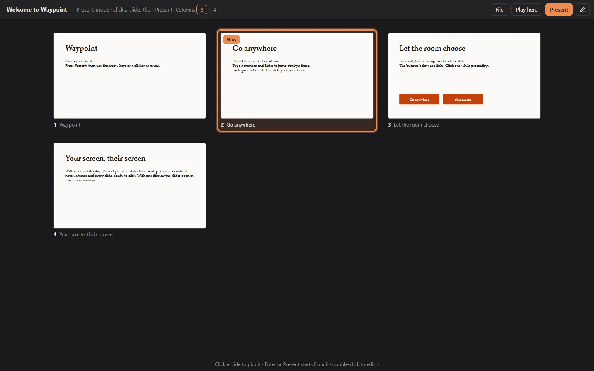
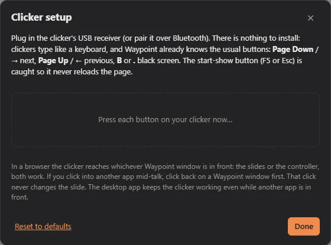
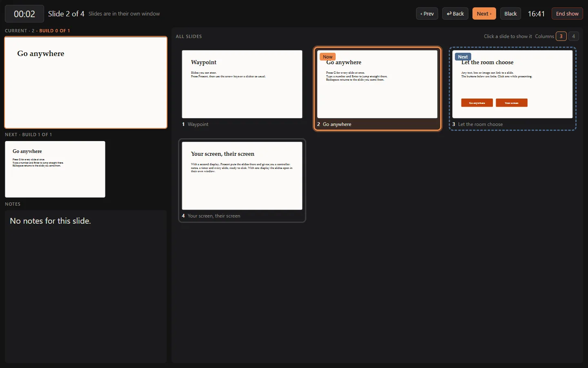
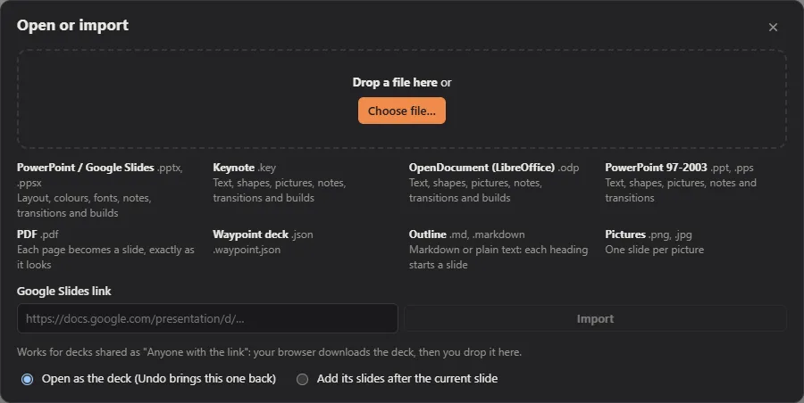
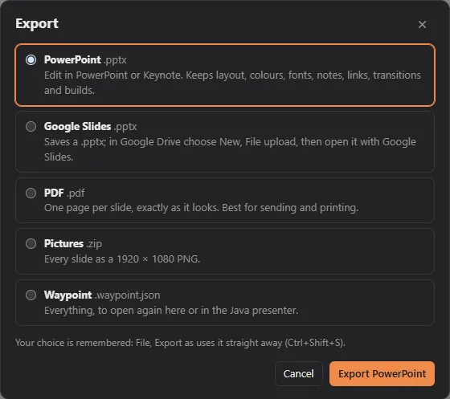

Slides you can present in order, or steer. Open the editor · Desktop app
Most slide tools assume a talk runs from the first slide to the last. Waypoint keeps that: arrow keys, the space bar and a clicker all move through the deck in order. It also lets you leave the path at any moment. Jump to any slide by number, pick one from a grid, click a link on the slide, or choose one from your own screen, then press Backspace to return to where you were.

With nothing selected, the right-hand panel sets the slide's transition: fade, push, cover, wipe, zoom, flip, cube or morph, with a duration. Morph glides items that appear on both slides (same text or picture) from their old place to their new one. Use on all slides applies it to the whole deck. Preview plays the slide with its transition and builds.
With an item selected, Build picks how it arrives: appear, fade, rise, fly in, drop in, zoom, pop, wipe, focus or spin, with a duration and delay. Starts sets the order: items on click 1 come in on the first press of Next, on click 2 on the second, and so on; with the slide plays as the slide arrives. Next always plays the slide's builds before moving on, and Previous steps back through them. Preview build plays one.
Transitions and builds work the same in the browser, the desktop app and the Java presenter, and they are kept when you export to PowerPoint.
In edit mode, Generate (Ctrl G) writes slides from a description of your talk. Choose how many, who it is for, whether to write speaker notes, and whether to add them after the current slide or replace the deck. You see every slide before it goes in, and one Undo takes them all out again.
Waypoint uses the AI you bring. Pick it in File, AI settings:
OLLAMA_ORIGINS=* set before it starts; the desktop app does not.npm install -g @openai/codex or npm install -g @google/gemini-cli), run it once in a terminal to sign in, then pick it in AI settings. No API key is needed and use counts toward your plan. Waypoint runs it read-only in an empty folder and sends it only the prompt.Keys are saved in a .env file on your computer, never in the deck or the browser, and are sent only to the provider they belong to:
.env in Waypoint’s settings folder. Show file in AI settings opens it..env file you choose or create once. Waypoint remembers it and asks for permission again on a later visit..env each visit; after changing keys, download the updated file.The file uses the usual names, so other tools can share it: ANTHROPIC_API_KEY, OPENAI_API_KEY, GEMINI_API_KEY and so on. Add more than one key for a provider by putting a label after the name, such as ANTHROPIC_API_KEY_WORK, or use Add key in AI settings.
Waypoint counts the tokens each key uses this month, on your device. Choose Automatic to use the least-used key and move on to the next one when a key is rate limited, out of credit, refused, or over a monthly limit you set, or pick one key to always use. Your provider’s dashboard has the exact figures and costs.
There are two ways to set up jumps ahead of time, both in the right-hand panel:
Links and choices follow the slide, not its number, so reordering never breaks them.
The pencil at the right end of the top bar switches edit mode on and off (Ctrl E). With it on (orange) you get the full editor and its shortcuts. With it off you are in present mode: every slide laid out on a grid like Keynote's light table, 3 or 4 to a row (pick with Columns). Click a slide to ring it in orange, use the arrow keys to move the ring, and press Enter or Present to start from it. Double-click a slide to edit it.

Present starts the show from the current slide. If a second display is connected, the slides fill that display and this window becomes your controller (Chrome and Edge ask once for permission to use your other screens; press Present again after allowing it). With one display the slides open in a window of their own. Play here plays a full-screen show in this window instead, with no controller. Move the mouse over the slides to bring up the control bar.
| Key | Does |
|---|---|
| → ↓ Space Enter PgDn, click | Next slide in order |
| ← ↑ PgUp | Previous slide in order |
| a number, then Enter | Jump to that slide |
| G or Tab | Grid of every slide. Arrows and Enter, or click |
| Backspace | Back to the slide you were on before, however you left it |
| Home / End | First or last slide |
| B or . | Black out the screen, and bring it back |
| F | Switch between full screen and a window |
| Esc | End the show |
Plug in the clicker's USB receiver or pair it over Bluetooth; there is nothing to install. Clickers type like a keyboard, sending Page Down and Page Up (some send arrows or media keys), and usually B or . for the blank button. Their start-show button sends F5 or Esc: F5 is caught so the page never reloads, and Esc ends the show as in PowerPoint.

While you present, your own screen shows the current slide, the next one, your notes and a timer, with every slide in the deck laid out on the right. Click any slide to send the audience there, even one the next arrow would never reach. The current slide is marked Now, the next one Next, and this slide's next choices are outlined. Columns switches between 3 and 4 slides per row; the slide on screen is ringed in orange. The keys above work here too; Esc or End show stops the show. Click the timer to reset it.

| Key | Does |
|---|---|
| Ctrl Z / Ctrl Shift Z | Undo, redo |
| Ctrl C / V / D | Copy, paste, duplicate the selected item. With nothing selected, Ctrl D duplicates the slide |
| Arrows | Nudge the selected item; with Shift, by 10. With nothing selected, change slide |
| Delete | Remove the selected item |
| Ctrl M | New slide |
| Ctrl B | Bold on or off for the selected text |
| Ctrl ] / Ctrl [ | Bring to front, send to back |
| Ctrl G | Generate slides with AI |
| ? | Show every shortcut |
| Ctrl Enter or F5 | Present |
| Ctrl S | Save the deck to a file |
The open deck is saved automatically on this device. Use File, Save file (Ctrl S) to keep a deck as a .waypoint.json file. In the desktop app, Open and Save use native dialogs and Ctrl S writes back to the same file; in a browser, Save downloads the file.
File, Open or import (Ctrl O), or drop a file on the window. Choose whether it replaces the deck or is added after the current slide; either way one Undo takes it back. With Waypoint installed (see below) you can also double-click a presentation, or use Open with.

| Type | What comes across |
|---|---|
PowerPoint .pptx | Layout, colours, theme fonts, text formatting and bullets, shapes, pictures (cropped), tables, links, speaker notes, transitions and build animations |
Keynote .key | Layout, colours, fonts, text formatting and bullets, shapes, pictures (cropped), speaker notes, transitions and builds. Tables and charts become a labelled box. Needs Keynote 6 or later (2013 on); open and save older files in Keynote first |
OpenDocument .odp | From LibreOffice or OpenOffice. Layout, colours, gradients, fonts, text formatting and bullets, every LibreOffice shape (drawn from its own outline), pictures (cropped), links, speaker notes, transitions and builds |
PowerPoint 97-2003 .ppt .pps | Layout, colours, fonts, text formatting and bullets, shapes, JPEG, PNG and bitmap pictures, links, speaker notes, transitions and builds. Old WMF/EMF clip art shows as a box with a note |
| Google Slides | Paste the share link (shared as Anyone with the link), or use File, Download, PowerPoint in Google Slides and open that file |
| One picture per page | |
| Markdown, text | An outline: # headings become slides, lists become bullets |
| Pictures | One slide per picture |
Paste a link in Link to a presentation in the Open dialog. Waypoint downloads the file, works out what it is from its contents, and opens it ready to present. It understands:
docs.google.com/presentation/d/…). Publish to the web links cannot be downloaded; use the Share link..pptx, .key, .odp or .pdf.The file must be shared so anyone with the link can view it; links that need a sign-in (for example, SharePoint links limited to your organisation) cannot be downloaded by Waypoint, so download the file yourself and open it. The desktop app downloads every link directly. In a browser, some sites refuse to hand the file to another web page; Waypoint then opens the download in a new tab for you to drop in. iCloud links cannot be downloaded at all.
Waypoint remembers the link. If you keep editing in Google Slides or PowerPoint, File, Update from link fetches the latest version before your talk; it replaces the slides, and one Undo brings back the previous version (including any jumps you added in Waypoint).
After an import, the top bar lists anything that did not come across exactly, such as fonts this computer lacks (a close match is used) or a 4:3 deck (its slides sit in the middle of the 16:9 frame). Password-protected files cannot be opened: remove the password in the app that made them first.
File, Export offers PowerPoint, Google Slides (a .pptx ready to upload), PDF, PNG pictures and a Waypoint file. The one you pick is remembered, and Export as (Ctrl Shift S) repeats it in one step. PowerPoint export keeps positions, colours, fonts, notes, links, transitions and builds; gradients become their first colour.

Waypoint can be an app with its own window and icon, so it opens from the taskbar, the Dock or the Start menu like any other. File, Install as an app walks you through it for the computer you are on. There are two ways.
.pptx, .key, .odp and .ppt files you double-click (the browser asks once whether to allow this).Download the installer for your system from the latest release: Waypoint-Setup.exe for Windows, a .dmg for macOS (Apple silicon or Intel), and a .deb or AppImage for Linux. The Windows installer adds Waypoint to the Start menu and the desktop; on a Mac, drag it to Applications. The desktop app adds native open and save dialogs, keeps the clicker working while another app is in front, and opens .pptx, .key, .odp and .ppt files. On a Mac and on Linux it appears under Open With for them; on Windows, right-click a file, choose Open with, Choose another app and pick Waypoint (or browse to it) (it never takes over files PowerPoint opens unless you tick Always).
| System | How |
|---|---|
| Windows | Open Waypoint, right-click its icon on the taskbar and choose Pin to taskbar. Or find it in the Start menu, right-click it, and choose Pin to taskbar or Pin to Start. In the desktop app, right-clicking the pinned icon also offers New window |
| macOS | Open Waypoint, right-click (or Control-click) its icon in the Dock and choose Options, Keep in Dock. Or drag Waypoint from Applications or Launchpad onto the Dock. Safari's Add to Dock pins it straight away |
| ChromeOS | Right-click its icon in the shelf and choose Pin |
| Linux | Right-click its icon in your dock or panel and choose to keep or pin it (the wording depends on your desktop) |
Windows and macOS leave pinning to you, so neither the browser nor the installer can do that last step. Once pinned, you can drop a presentation on the icon to open it.
The web version updates itself: when a new version goes live, a bar offers to reload. The desktop app checks GitHub for a new release when it starts and every few hours, downloads it in the background and installs it when you restart. File, About and updates shows your version and checks now.
The desktop app is the same editor in its own window. Installers are on the releases page (see Install). To run it from source you need Node.js 20 or newer:
git clone https://github.com/PyMite6941/waypoint
cd waypoint
npm install
npm run desktopThe README covers development and building an installer.